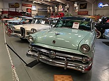
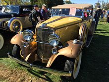
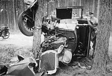

Canada
The Vintage Car Club of Canada (VCCC) recognizes vehicles that are 25 years old and older. The VCCC is one of the oldest collector car clubs in Canada. It has been a registered Society since the mid 1950s. Each year a different Chapter hosts the annual May Tour in a different geographical location in British Columbia. The VCCC has approximately 2800 members in BC counting spouses. The club has been a continuous member of the (NAACC) National Association of Automobile Clubs of Canada Corporation since 1971. The National Association of Automobile Clubs of Canada (NAACC) recognizes stock and modified vehicles that are 20 years old and older. The National Association of Automobile Clubs of Canada is Federally incorporated as a 'not for profit' Corporation. Operational since 1970 it is one of the largest collector vehicle Associations in North America. The NAACC is responsible for doing away with 'Duty' at the Canadian border. All vehicles and related parts that are 25 years old or older are 'Duty' free when entered into Canada. As of this writing the NAACC is represented in every Province in Canada. The Association sanctions two major Concours in Canada. The Cobble Beach Concours in Kemble Ontario (Owen Sound) and the Crescent Beach Concours on the west coast (Surrey BC) are sanctioned by the NAACC.
United States
Cars produced in 1915 and older typically fall into the antique class
and this includes the "Brass Era car" that are defined by the Horseless
Carriage Club of America (HCCA) as "any pioneer gas, steam and electric
motor vehicle built or manufactured prior to January 1, 1916." The
"classic" term is often applied loosely by owners to any car that is
more than 20 years old.Legally, most states have time-based rules for
the definition of "historic" or "classic" for purposes such as antique
vehicle registration. For example, Maryland defines historic vehicles as
20 calendar years old or older and they "must not have been
substantially altered, remodeled or remanufactured from the
manufacturers original design" while West Virginia defines motor
vehicles manufactured at least 25 years prior to the current year as
eligible for "classic" car license plates. Despite this, at many
American classic car shows, automobiles typically range from the 1920s
to the 1970s. Recently, many 1980s and even early 1990s cars are
considered being "classic automobiles". Examples of cars at such shows
include the Chevrolet Bel-Air, Ford Model T, Dodge Charger, Ford Deuce
Coupe, and 1949 Ford. Meanwhile, the Concours d'Elegance car shows
feature prestigious automobiles such as the Cadillac V16 or pre-1940
Rolls-Royce models. There are also terms as "modern customs", "exotics",
or "collectibles" that cover cars such as the AMC Gremlin or Ford Pinto.
There are differences in the exact identification of a "classic car".
Division by separate eras include: horseless carriages (19th-century
experimental automobiles such as the Daimler Motor Carriage), antique
cars (brass era cars such as the Model T), and classic cars (typically
1930s cars such as the Cord 812). Some also include muscle cars, with
the 1974 model year as the cutoff.

Classic Car Club of America
The Classic Car Club of America describes a CCCA Classic as a "fine" or
"distinctive" automobile, either American or foreign built, produced
between 1915 and 1948. The CCCA is dedicated to the preservation and
enjoyment of select cars that "are distinguished by their respective
fine design, high engineering standards and superior workmanship." Other
differentiating factors - including engine displacement, custom
coachwork, and luxury accessories such as power brakes, power clutch,
and "one-shot" or automatic lubrication systems - help determine whether
a car is considered a CCCA Classic. The cars on their list "represent
the pinnacle of engineering, styling and design for their era." Any CCCA
member may petition for a vehicle to join the list. Such applications
are carefully scrutinized, but rarely is a new vehicle type admitted.
Moreover, no commercial vehicles such as hearses, ambulances, or race
cars are accepted as a Full Classic. The CCCA maintains this definition
of "classic car" and uses terms such as CCCA Classic or the trademarked
Full Classic. The CCCA has estimated that 1,366,843 "American Classics"
were built. Antique Automobile Club of America The Antique Automobile
Club of America (AACA) recognizes "motorized vehicles 25 years old or
older, which were built in factories and specifically designed and
manufactured for transportation use on public roadways and highways."
Judging by the AACA evaluates such vehicles to be in historic or that
have "been restored to the same state as the dealer could have prepared
the vehicle for delivery to the customer." Specified AACA classic
vehicles include "fine or unusual domestic or foreign automobiles
primarily built between and including the years 1925 and 1942."

Antique Automobile Club of America
The Antique Automobile Club of America (AACA) recognizes "motorized vehicles 25 years old or older, which were built in factories and specifically designed and manufactured for transportation use on public roadways and highways." Judging by the AACA evaluates such vehicles to be in historic or that have "been restored to the same state as the dealer could have prepared the vehicle for delivery to the customer." Specified AACA classic vehicles include "fine or unusual domestic or foreign automobiles primarily built between and including the years 1925 and 1942."
Renting Classic Cars in the US
For those in the United States who do not own a classic car but still wish to get behind the wheel, few companies in the United States allow people to rent from their personal collection of classic cars. Monterey Touring Vehicles has over 30 classic cars that people can rent. On the East Coast, people in North Carolina can rent for special occasions in Raleigh from Carolina Classic Car Rentals.
United Kingdom
There is no fixed definition of a classic car. Two taxation issues do impact however, leading to some people using them as cutoff dates. All cars built over 40 years ago are exempted from paying the annual road tax vehicle excise duty, and also exempt from the annual UK safety test known as the MOT test, however the vehicle can still be presented for test on a voluntary basis. HM Revenue and Customs define a classic car for company taxation purposes as being over 15 years old and having a value in excess of £15,000. Additionally, popular acclaim through classic car magazines can play an important role in whether a car comes to be regarded as a classic but the definition remains subjective and a matter of opinion. The elimination of depreciation can be a reason for buying a classic car and picking 'future classics' that are current 'bangers' can result in a profit for the buyer as well as providing transport. An immaculate well cared for prestige model with high running costs that impacts its value, but is not yet old enough to be regarded as a classic, could be a good buy, for example.
Modern classics
Modern classic cars are generally older vehicles, ranging from 15 to 25 years, but are usually not accepted as classics according to the Antique Automobile Club of America. In the United Kingdom, the modern classic definition is open to the discretion often by Insurance Brokers and Insurance Companies who regard a Modern Classic as a vehicle that is considered collectible regardless of age. The usage of the vehicle limited to recreational purposes or restricted mileage is also taken into account.
Classic car styling
There was a worldwide change in styling trends in the immediate years after the end of World War II. The 1946 Crosley and Kaiser-Frazer, for example, changed the traditional discrete replaceable-fender treatment. From this point on, automobiles of all kinds became envelope bodies in basic plan. The CCCA term, "antique car" has been confined to "the functionally traditional designs of the earlier period" (mostly pre-war). They tended to have removable fenders, trunk, headlights, and a usual vertical grill treatment. In a large vehicle, such as a Duesenberg, Pierce-Arrow, or in a smaller form, the MG TC, with traditional lines, might typify the CCCA term. Another vehicle might be a classic example of a later period but not a car from the "classic period of design", in the opinion of the CCCA.
Fraud
Classic cars are subject to various types of fraud, most notably provenance fraud, where owners falsify documentation and serial numbers in order to make a car's history seem more colorful and historic. Fraud also assumes the form of knowingly inflating a car's estimated resale value, as was referenced in court proceedings relating to JD Classics, hitherto one of the UK's largest and best-known classic car dealers prior to its collapse in 2018.
Emission levels
Classic cars are typically built to meet the national car emission levels that were present in the year of production of the vehicle. EU and US emission standards have increased in many countries since then. As a result, they may not be allowed to enter cities with special emission restrictions or low emission zones. Converting the car to run on a different fuel (i.e. SVO, LPG, CNG, hydrogen, ...) may decrease emission levels.
Safety
Classic cars often lack what is now considered basic safety features,
including seat belts, crumple zones or rollover protection. In September
2009, ABC News' Good Morning America and World News showed a U.S.
Insurance Institute of Highway Safety crash test of a 2009 Chevrolet
Malibu in an offset head-on collision with a 1959 Chevrolet Bel Air
sedan. It dramatically demonstrated the effectiveness of modern car
safety design, over 1950s X-frame design, particularly of rigid
passenger safety cells and crumple zones. The 1959 Chevrolets used an X
frame design which lacked structural rigidity; had the IIHS used a
pre-1958 Chevrolet with a perimeter frame design, the results would have
been much better. Vehicle handling characteristics (particularly
steering and suspension) and brake performance are likely to be poorer
than current standards, hence requiring greater road-awareness on the
part of the driver. In certain areas of the United States, using a
classic car as a daily vehicle is strongly discouraged and may even be
considered illegal in some places. The British AA motoring association
has urged motorists using or driving near classic cars to pay particular
attention to safety. The issue received particular public attention
following a 2013 case in which a driver in a hire 1963 MGB was killed
immediately in a collision with a taxi. Retro-styled (color-coded with
chromed buckles) 2-point and 3-point seat (safety) belts are
manufactured according to Federal Motor Vehicle Safety Standards
(FMVSS). However, most classic car bodies (manufactured before the late
1960s) did not include safety belts as standard equipment, and do not
include readily available reinforced mounting points, on the vehicle
body, therefore it can be problematic to install such equipment
properly: specific studies and calculations should be performed before
any attempts. Proper installation is critical, which means locating
attachment points on the body/frame, assuring the strength by proper
reinforcement, and following the seat belt installation instructions
properly to reduce the risk of malfunction or failure. Some classic car
owners are reluctant to retrofit seat belts for the loss of originality
this modification implies. There have also been instances of cars losing
points at shows for being retrofitted with seat belts. Fitting modern
tires is also a suggestion to improve the handling. However, most modern
tires may be much wider and have a lower profile than those used on
classic cars when new, therefore they may interfere with suspension
elements and the tire walls may become damaged. The suspension of a
classic car may not be suitable for radial ply tyres, having been
designed to only accommodate bias ply tires. Narrow classic car wheels
may have been designed for narrow high-profile tube tires and not be
suitable for modern tubeless radial tires. Another problem with modern
tires on classic cars is that increased grip requires increased steering
effort; many classic cars do not come with power steering. Many major
tire companies have dedicated classic car tire marketing departments and
will be able to give expert technical advice to address all these
issues. It is important to know how radial tires will affect the
performance of a car originally fitted with bias-ply tires, and the
considerations needed to compensate for the differences. Upgrading
braking using either bespoke parts, parts produced by the vehicle's
manufacturer, from later versions of the same model or later models that
may be compatible with minor modification, is an effective method of
improving safety. Popular examples include drum brake to disc brake
conversions, or adding a vacuum servo to cars with front disc brakes
that did not originally have one. Although they lack such advanced
safety features as air bags, antilock braking systems, and other
electronic controls, most US-market cars built 1966 and later have basic
safety features such as padded dashboards, seat belts, dual-circuit
braking systems, and safety glass. A few of the newest classic cars
(1980s and 1990s) have more advanced safety features such as air bags,
anti-lock brakes, and side-impact beams. NHTSA began their 35-mph full
frontal crash test program in 1979, so these results are available for
many post-1979 classic cars. Despite these concerns, classic cars are
involved in significantly fewer accidents.

Market values
It is instructive to distinguish between valuation of classic car models and valuation of individual classic cars. For instance, two examples of exactly the same classic car model may have different market values depending on idiosyncratic factors such as mileage, service history, documentation, restoration quality, originality, participation to special events, distinctions and awards, and association with notable people. As regards valuation of different car models, it has been demonstrated that classic car model values are determined by observable characteristics pertaining to aesthetics, rarity, engineering and performance. In addition, classic car marques play a critical role in the determination of model values and account for considerable variation in values, even after controlling for observable classic car attributes.[38]